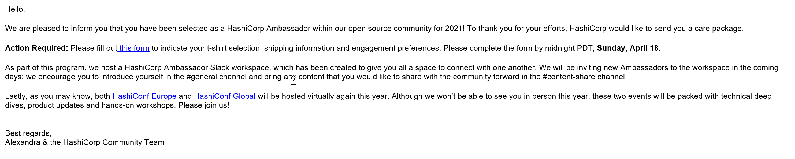

Hey,
I got some GREAT NEWS to share, based on an email I received earlier this week:

which informed me I am recognized as a HashiCorp Ambassador!!
I can imagine that some of you might not be familiar with this recognition. Easy said, it is much like the Microsoft MVP title, rewarding individuals for their outstanding contributions in the technical communities.
In my personal case, my first adventures with Terraform started about 5 years ago. I was struggling with Azure ARM templates, and Terraform seemed like an easier language to achieve the same purpose, deploying Azure resources.
From there, I started presenting at international User Group events on Terraform (did around 12 sessions in about 24 months…), and integrating it in my Azure workshops. (The biggest reference was a German customer I helped migrating to Azure, where the year after, one of their cloud leads presented at HashiConf.
When I moved to Microsoft in Sept 2019, I didn’t stop including Terraform in my demos on Infrastructure as Code across all Azure trainings I’m delivering.
I created courseware on Terraform for Azure, contributed to GitHub projects on the same and overall continue using it myself.
Earlier this year, I was a presenter at HashiTalks 2021, talking about the different ways to authenticate Terraform to Azure.
Besides spreading the word on Terraform and other HashiCorp tools, it gives me the opportunity to participate in roundtables with the product teams and go through beta-testing of updates or new product features, as one of the early testers. And it’s also nice to have a stronger representation in the broader HashiCorp Ambassador family.
The same as with the Microsoft MVP status in past years, it is a nice recognition for the community efforts. I don’t take this award lightly and am very proud and honored to have received it.
I always did - and will continue doing community activities - for the community, not for the title.
If you got any questions on HashiCorp, Terraform or the Ambassador program, feel free to reach out.

/Peter